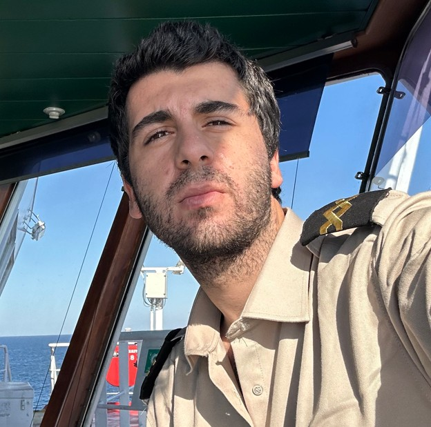

BURAK DEMIRCI
OCEANGOING WATCHKEEPING OFFICER
Contact
Email: burak_de@yahoo.com
Nationality: Turkish
DOB: 1999
Passport: Valid until 2031
Position: Oceangoing Watchkeeping Officer
Nationality: Turkish
DOB: 1999
Passport: Valid until 2031
Position: Oceangoing Watchkeeping Officer
Profile
Officer experienced in tanker operations, navigation, and safety management. Participated in 300+ cargo operations, SIRE, Flag, and Vetting inspections. Skilled in ECDIS (TRANSAS NS4000), ballast operations, and safety audits.
Certifications
STCW II/1 OOW Unlimited
Advanced Fire Fighting
Fast Rescue Boats
Medical Care on Board
Advanced Chemical & Oil Tanker Ops
Security Awareness & Designated Duties
Ship Security Officer (SSO)
Advanced Fire Fighting
Fast Rescue Boats
Medical Care on Board
Advanced Chemical & Oil Tanker Ops
Security Awareness & Designated Duties
Ship Security Officer (SSO)
Languages
Turkish – Native
English – Professional
English – Professional
Interests
Maritime Safety
Navigation Systems
Data Science in Shipping
Cyber Security
Navigation Systems
Data Science in Shipping
Cyber Security
Experience
Sep 2023 – Oct 2025
Second Mate / Watch Officer
Cilicia / Okanogulları Shipping – M/T SEBAHAT ANA (8672 DWT)
- Bridge watchkeeping, ECDIS navigation, COLREG compliance.
- Supervised 200+ cargo operations (loading, discharging, STS, COW).
- Maintained safety equipment, LSA/FSS, GMDSS logs.
- Participated in SIRE, Flag, and Vetting inspections.
- Prepared passage plans, risk assessments, and drills.
Mar 2022 – Oct 2022
Deck Cadet
Imza Marine – M/T B LUMINOSA (68,439 DWT)
- Shipboard cargo and ballast operations under supervision.
- Maintained safety and firefighting systems (SOLAS compliance).
Jul 2020 – Sep 2020
Deck Cadet
Aurora Shipping – M/T TRIDENT TRINITY (45,467 DWT)
- Bridge and cargo watch, inerting, gas freeing, STS operations.
Education
2019 – 2023
Maritime Transportation & Management Engineering
Karadeniz Technical University | B.Sc. | GPA 3.50/4.00
2014 – 2018
High School Diploma
Istanbul Uskudar High School | Science Department
Technical Expertise
ECDIS (TRANSAS)
Data Analysis (Python/SQL/VBA)
Ship Handling
Risk Assessment
Website
Seafarer Verification